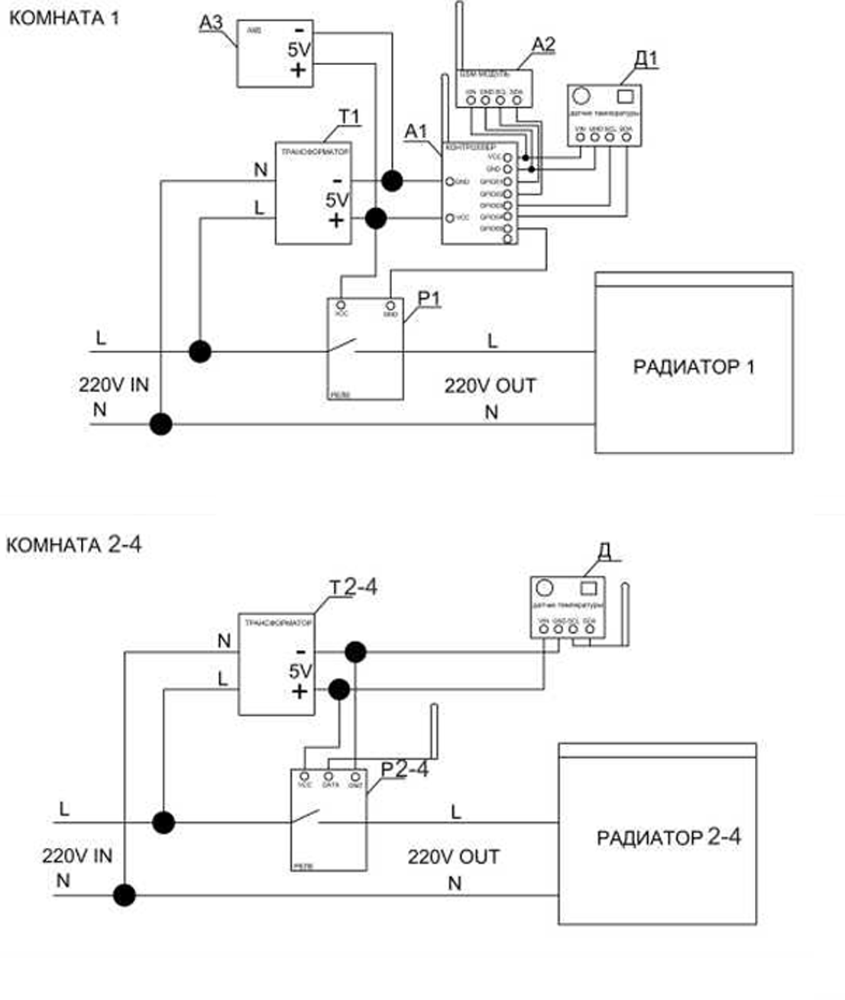

sushchikh dmitry & co
Умный дом
управление обогревом, климат, IOT
управление обогревом, климат, IOT
задача
С помощью мобильного телефона стандарта gsm включать радиаторы на даче в момент выезда из квартиры, чтобы к приезду дом был теплый.
решение
Радиаторы питаются от розеток 220 вольт переменного тока 50-60 герц. В разрыв цепи между розеткой и радиатором устанавливается группа из wi-fi контроллера esp8266, питающегося через трансформатор 220В/5В AC-DC, собирающего данные через датчик температуры BMP180/SHT21/DS18B20 и управляющего подачей питания через твердотельное реле OMRON G3NA. Группы обмениваются данными с главным контроллером raspberry pi, с модулем SIM800, снабженным резервной АКБ.
